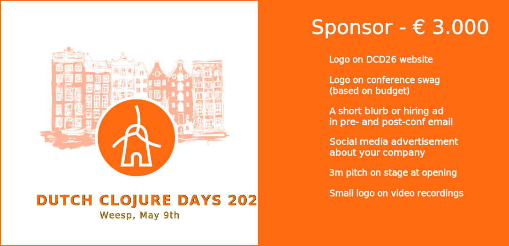
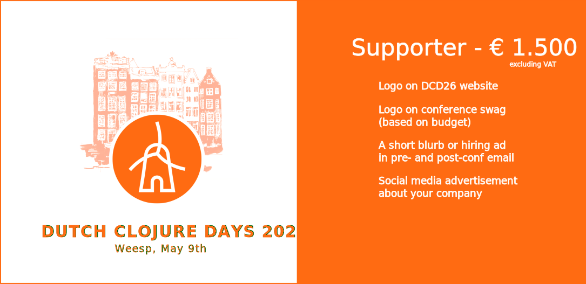

About DCD 2026
The Annual International Gathering of Clojure Enthusiasts and Practitioners in the Netherlands! We welcome you to the 6th edition of our free and non-profit Clojure conference organised by the community, for the community with a full day of amazing talks in a friendly welcoming atmosphere.
When?
Dutch Clojure Days is scheduled to happen on Saturday, May 9th, 2026.
Where?
Dutch Clojure Days will take place at the amazing City of Wesopa, in the stunning Amsterdam city district of Weesp (Herengracht 23, 1382 AG Weesp).
Tickets
Registrations are open and free of charge. Go ahead and get your ticket now!
Call for Proposals
Our CFP will be open from November 1st, 2025 until January 15th, 2026.
Are you involved in in the Clojure ecosystem? Are you proud of a project you're working on?
Come and present at the Dutch Clojure Days 2026 Conference! Your solution can be absurd, incredibly practical or make the world a better place. Show your warm Clojure-knitted sweaters, exciting live music setup, break-through open source tools, community work or perfectly executed business solution. If you're passionate about it, we want to hear about it!
Your presentation can be a short, 7 minute lightning talk, or a full 35 minute presentation.
From November 1rst, 2025 you can submit your proposal at Sessionize.
Sponsorship Packages
Want to join us in spreading the Clojure love? We'd be thrilled to have you as a sponsor! We've got three awesome sponsorship packages designed to fit every budget:



If you want to support and engage with the Dutch Clojure Days community, please get in touch via email at events@clojuredays.org.
Agenda
The agenda below is just an indication as our CfP is still ongoing!
8:30 9:15 | Reception | |
9:15 9:30 | Opening | #DCD26 team |
9:30 10:15 | ||
10:25 11:10 | ||
11:20 12:00 | ||
12:00 14:00 | Lunch | |
| Lightning Talks | ||
14:00 14:10 | ||
14:10 14:20 | ||
14:20 14:30 | ||
14:40 15:00 | Coffee break | |
15:00 15:45 | ||
15:45 16:30 | ||
16:30 16:40 | Closing | #DCD26 team |
17:00 🥳 | Networking/Drinks |
Code of Conduct
All attendees, speakers, sponsors and volunteers at our conference are required to agree with the following code of conduct. Organisers will enforce this code throughout the event. We expect cooperation from all participants to help ensure a safe environment for everybody.
Need Help?
You can always reach out to us at events@clojuredays.org or on twitter.
The Quick Version
Our conference is dedicated to providing a harassment-free conference experience for everyone, regardless of gender, gender identity and expression, age, sexual orientation, disability, physical appearance, body size, race, ethnicity, religion (or lack thereof), or technology choices. We do not tolerate harassment of conference participants in any form. Sexual language and imagery is not appropriate for any conference venue, including talks, workshops, parties, Twitter and other online media. Conference participants violating these rules may be sanctioned or expelled from the conference without a refund at the discretion of the conference organisers.
The Less Quick Version
Harassment includes offensive verbal comments related to gender, gender identity and expression, age, sexual orientation, disability, physical appearance, body size, race, ethnicity, religion, technology choices, sexual images in public spaces, deliberate intimidation, stalking, following, harassing photography or recording, sustained disruption of talks or other events, inappropriate physical contact, and unwelcome sexual attention.
Participants asked to stop any harassing behavior are expected to comply immediately.
Sponsors are also subject to the anti-harassment policy. In particular, sponsors should not use sexualised images, activities, or other material. Booth staff (including volunteers) should not use sexualised clothing/uniforms/costumes, or otherwise create a sexualised environment.
If a participant engages in harassing behavior, the conference organisers may take any action they deem appropriate, including warning the offender or expulsion from the conference with no refund.
If you are being harassed, notice that someone else is being harassed, or have any other concerns, please contact a member of conference staff immediately. Conference staff can be identified as they'll be wearing branded clothing and/or badges.
Conference staff will be happy to help participants contact hotel/venue security or local law enforcement, provide escorts, or otherwise assist those experiencing harassment to feel safe for the duration of the conference. We value your attendance.
We expect participants to follow these rules at conference and workshop venues and conference-related social events.